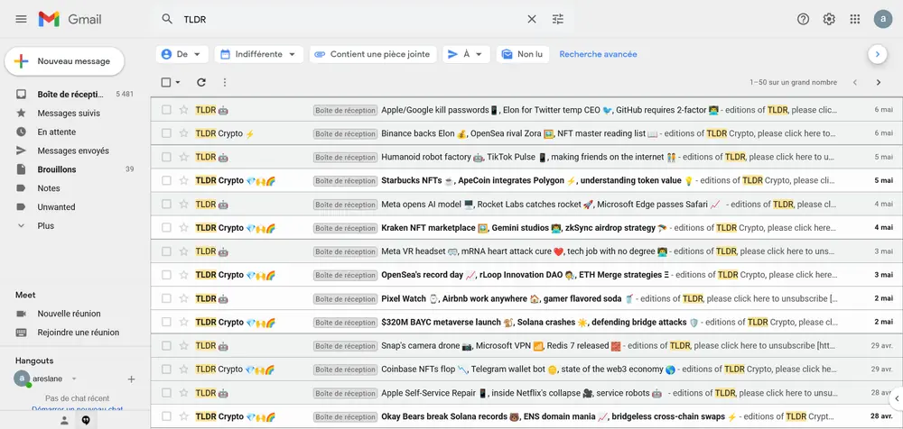

What AI can do
- Learn from data
- Analyze information
- Support decision-making
- Generate content
// tech watch
How I keep up with tech news, and what generative AI changes for developers: what it makes possible, the risks it poses and good practices for using it well.
I use RSS feed aggregators, which bring together articles from all my sources in one place. I also receive newsletters about the latest developments in tech and cryptocurrency.

Artificial intelligence covers a range of technologies capable of reproducing certain human abilities. According to several specialist sources, it is becoming a major tool in computing, especially in web and software development.
With generative AI tools such as ChatGPT, Gemini or Copilot, you can:
My take: AI should remain a tool that supports developers in their work, not a replacement for them.